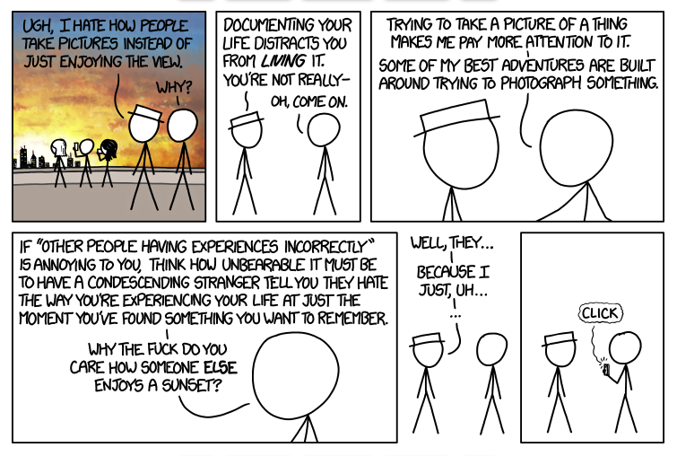

Agree, Disagree, My Way
28 Jul, 2023
It's so easy to be swayed by the words of someone successful. And when that someone is Derek Sivers, you don't even give it a second thought. You just agree!
I read one of Derek's blog posts, where he discussed his travel experience in Seoul with no mobile.
Derek said "It was a relief to not document everything. I appreciated everything as a one-step process instead of a two-step process. I could just feel amazed, instead of feel amazed and hold up my camera to record it."
Okay, I "agree" with Derek! It's beautiful to live in the moment, instead of trying to capture it.
But guess what? I bumped into one of the comments, where a counter-argument was proposed.
Here it is ⬇️

Okay, now, what do you think about Derek's words? Do you still agree with him? Well, I kind of "disagree" now! üòÖ
It's beautiful to live in the moment but capturing it doesn't entirely take away its essence. It may even make the experience more beautiful!
So, after these agree-disagree moments, I realized a couple of things:
You can evaluate the soundness of an argument only when you solely focus on the argument and not who said it.
Everyone has their own way of experiencing and appreciating things. You don't have to feel guilty if your way doesn't match with others.
And these realizations led me to find "my way".
I wanna document things when I feel like it. And when I don't, I'll just live in the moment. In either case, no guilt!
Btw, I'm going on my first solo trip today. And I'm gonna enjoy every moment and document a few!
So, stay tuned! Travel talks and pictures are on your way!